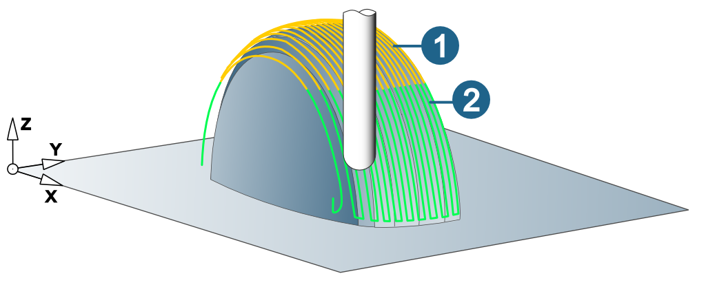

Define
To allocate technology parameters to a tool:
-
In the data view, click the Technology tab and set the Cutter material, Cutting edges and Spindle orientation.
-
Then, in the lower area of the dialog box select the required Material and Usage.
Note
The technology data Cutting edges and Spindle orientation are available only for tools, but not for inserts.
If an insert with defined technology data is assigned to a tool with technology parameters, the technology data of the tool is overwritten with that of the insert.
You can define the following technology data:
|
Parameters |
Explanatory note |
|---|---|
|
Material |
Define material |
|
Cutter material |
Define cutter material |
|
Usage |
Define technology usage |
|
Spindle RPM (n) |
Machining speed |
|
Feedrate XY |
Feedrate in the work plane |
|
Axial feedrate |
Feedrate in stepover direction |
|
Reduced feedrate |
Feedrate for plunge movements into material. |
|
Retract feedrate, |
Feedrate for retract movements (retract macro). |
|
Feedrate approach |
Feedrate for approach movements (approach macro). |
|
Feedrate retract |
Feedrate for retract movements (retract macro). |
|
Feedrate stroke |
Feedrate for stroke movements (Grinding bit tool type). |
|
Overlap top |
Length of the distance that the tool travels beyond the machining area in the axial positive direction. |
|
Overlap bottom |
Length of the distance that the tool travels beyond the machining area in the axial negative direction. |
|
F/edge (fz) |
Feed on the edge. |
|
Cutting speed (Vc) |
Speed of the tool geometry in the cut direction through the material to be machined. |
|
Fz drill (f) |
Feedrate in z direction/rotation. |
|
Max. angle for reduced feedrate |
Maximum permitted angle of the tool for machining at reduced feedrate. |
|
Plunge angle |
Plunge angle of the tool. |
|
Infeed width (ae) |
Area of the tool tip used for cutting. Applies only to milling tools that do not center cut. |
|
Infeed length (ap) |
Length of the cutting edge(s) that is/are used for machining the material. |
|
Cutting direction |
Cutting mode of the tool (climb milling, conventional milling). |
|
Tool breakage check |
A breakage check can be carried out with the tool. For NC tools in a depot, an alternative setting can be selected for the tool breakage check. The breakage check is only supported with a Virtual Machine prepared for this purpose. |
The values for spindle RPM and feedrate can be defined using pre-defined or user-defined formulas.
Factor speed / Factor feedrate: Factor values that are applied to the spindle RPM and feedrate of the tool.
Infeed width factor (ae) / infeed length factor (ap): define a factor to modify the infeed width (ae) and infeed length (ap) of holders, extensions and NC tools.
Maximum spindle speed/ Maximal feedrate: Limitation of feedrate and spindle RPM.
5X comp. length: Value for calculating the linear offset as a result of rotating the tool.
Max. angle for reduced feedrate: Maximum permitted angle of the surface to be machined for machining with reduced feedrate.
(1) Surfaces, whose angle is smaller, are machined with feedrate XY.
(2) Surfaces, whose angle is the same or larger, are machined with the reduced feedrate.
Example: cycle: 3D Profile Finishing, Max. angle for reduced feedrate = 45°
|  |
Feedrates
All feedrates in hyperMILL refer to the respective tool reference point. Feedrates can therefore occur on the individual axes that deviate from the value for the tool reference point. Parametric feedrate output is generally not provided, especially not for linking jobs when the underlying sub-jobs involve feedrate changes.